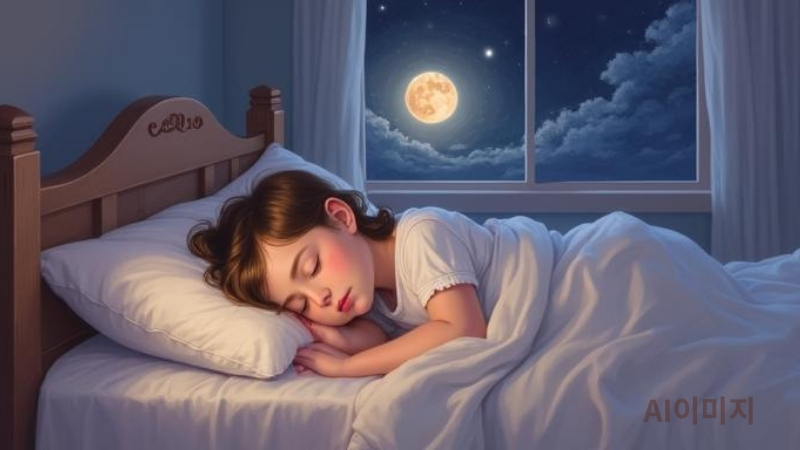

“새벽 2시에 자면 망하나요?”
뇌과학으로 푸는 수면 골든타임

안녕하세요! 혹시 "10시 전엔 자야 피부가 좋아진다", "일찍 일어나야 성공한다"는 말 때문에 스트레스받고 계신가요? 오늘은 노벨상 연구 결과를 토대로 수면에 대한 상식을 뒤집어보려 합니다.
Q. 아침형 인간이 무조건 좋은 걸까요?
A: 아니요, 당신의 'PER 유전자'가 결정합니다.
2017년 노벨 생리의학상을 받은 연구에 따르면, 사람마다 타고난 생체 시계가 다릅니다. 저녁형 인간이 억지로 일찍 일어나는 것은 뇌를 '사회적 시차 피로' 상태로 만들어 인지 능력을 20% 이상 떨어뜨립니다.
수면 골든타임의 진짜 비밀
성장호르몬이 밤 10시에서 2시 사이에만 나온다는 말은 절반만 맞습니다. 호르몬 분비의 핵심은 '입면 후 첫 90분'입니다.
📊 과학적 근거: 서파 수면(Deep Sleep)의 힘
칼럼 목록으로 돌아가기
- 첫 90분: 수면 진입 후 가장 깊은 단계인 '비렘수면 3단계'에서 호르몬의 80%가 분비됩니다.
- DEC2 유전자: 인구의 1%는 4시간만 자도 뇌 회복이 끝나는 특수 유전자를 가졌습니다. 하지만 당신이 99%라면 7시간은 필수입니다.
- 렘수면의 역할: 꿈을 꾸는 동안 뇌는 '편도체'를 진정시켜 감정 쓰레기를 비워냅니다.
📚 신뢰를 더해주는 학술 자료
- Nobel Prize (2017): Circadian Rhythm Regulation
- Science (2009): The transcriptional repressor DEC2 and sleep length
- Matthew Walker: Why We Sleep (수면 뇌과학 데이터)